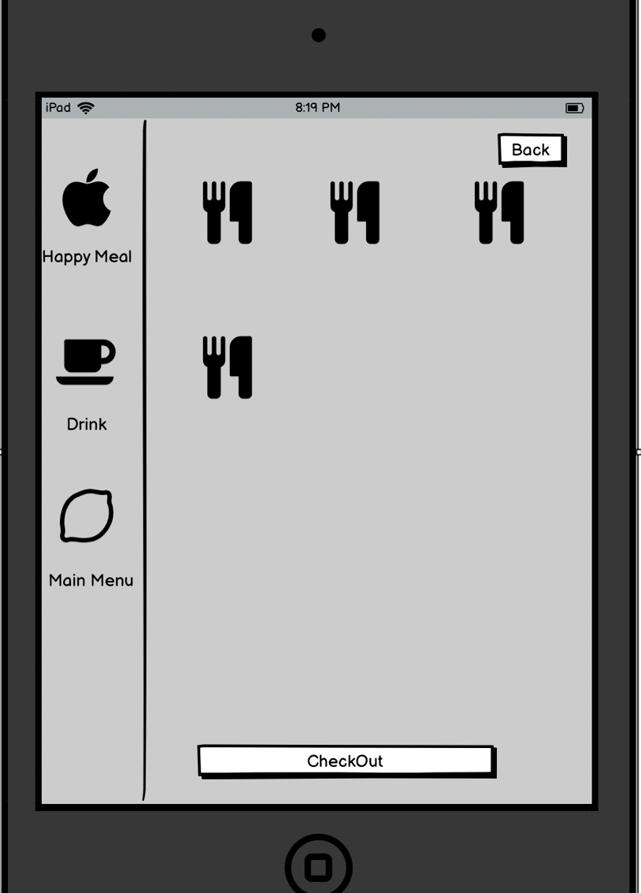
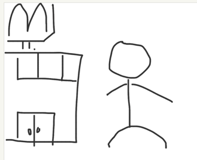
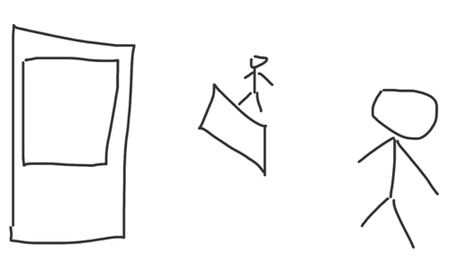
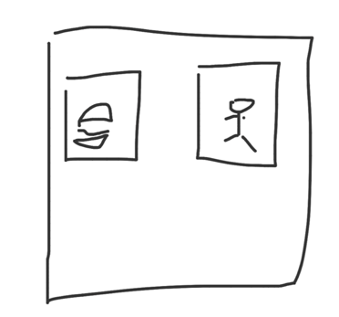
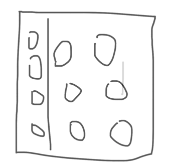
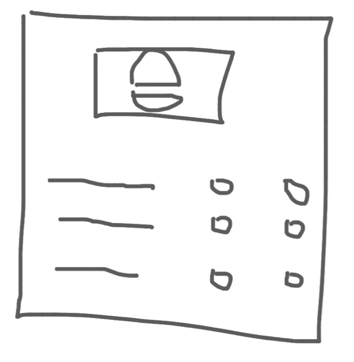

Mcdonalds kiosk
Sketch:

Description:
It shows “take out” and “eat in” in the beginning and once customer picks one of them the kiosk will go to the above screen. Left side is a column of categories and when you pick the categories you will see the corresponding items on the right side. The items also support customizing. Whenever you push checkout button it will then go to the payment page.
Interview Questions:
1. Did you find it faster than ordering in person?
2. Did you find it more accurate than ordering in person?
3. Any complains about the kiosk?
4. Which one will you choose next time for ordering, kiosk or in person?
Person A:
She thinks it's absolutely faster and more accurate than ordering in person
She seems really satisfy with kiosk.
The only one complaint is that she forgot to get the receipt and didn't see the order number.
She will definitely choose kiosk next time
Person B:
He thinks that it's only faster than ordering at the counter when there's a line at the counter.
He doesn't think it's more accurate.
He's having trouble with finding the desired item.
He will choose whether nor to use it depends if there's a line.
Person B:
She thinks it's faster and more accurate because she's not familiar with the name of the items. And this interface helps her choosing the desired ones.
Although she's also having trouble with finding the right item sometimes, overall, it's a smooth process.
She will still choose kiosk next time
Empathy Map:
Lulu is an international student at Brown who's not familiar with Macdonald's menu
Thinks: “What exactly is a big mac?” “Why does every item name contain Mac?” “Why do American like pickle”
Feels: Confused by the item name on the menu. Frustrated by not getting the right burger she wants. Pressure by other people when she doesn't understand what Macdonald's workers are saying.
Says: “What do you mean by this?” “Sorry if I misunderstood you” “Can you repeat what you said?”
Does: Often orders the wrong food. Decide to use kiosk even if there's no line at the counter.
Tom is an elderly who never used kiosk before
Thinks: “What is this button for?” “Where do I find big Mac”
Feels: Confused by the item name on the menu. Frustrated when having trouble with finding the item.
Says: “Excuse me, how do I find big mac” “This machine doesn't accept cash?”
Does: Accidently checks out when not finishing the order. Push the button back and forth to test the functionality of the button.
StoryBorad

Lulu just finished his class and see a Macdonald's

Lulu sees a counter and a kiosk and she thinks for a while, considering that she might not be confident which item to order, she decides to use the kiosk

Lulu sees two buttons, one labeled with “Take out”, one labeled with “eat in”, lulu chooses eat in.

Suddenly a page with lots of stuff shows up and half of them are promotions. Lulu just want the regular meals so she takes a while to find the right submenu. In the submenu, she found the big mac meal.

Lulu pushes customize and remove pickle from big mac and she scrolls down the page and pushes checkout.
A payment selection page than pops out. Lulu doesn't bring her wallet so she takes out her phone. Finally, she paid by apple pay and the receipt pop out from the kiosk.